Social & campaigns / 2024
Social Media - Coffee and Al-Sham Roastery
Glitch Advertising Agency - Social Media Campaign Overview: Glitch Advertising Agency, founded in early 2023, specializes in innovative and impactful social media campaigns. Client: A coffee and nut-based snack company in El Sheikh Zayed, Egypt. Objective: Boost online presence, increase brand awareness, and engage the target audience. Highlights: Creative Designs: Eye-catching visuals and compelling messaging. Engagement: Interactive and playful elements. Brand Storytelling: Emphasizing quality and uniqueness. Impact: Increased social media engagement, higher visibility, and significant growth in followers and interactions. Thank You: Thanks for watching! Your support is appreciated.
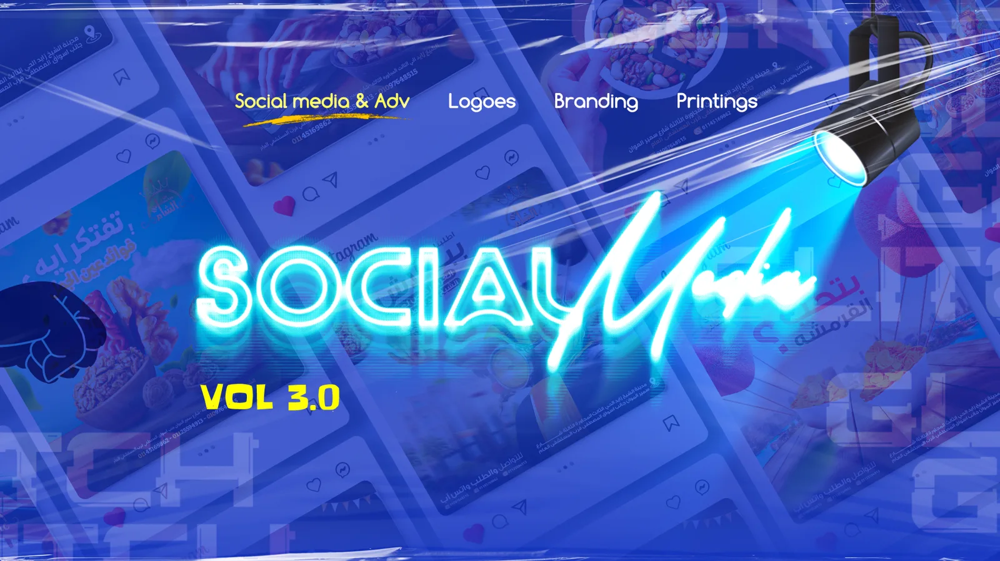
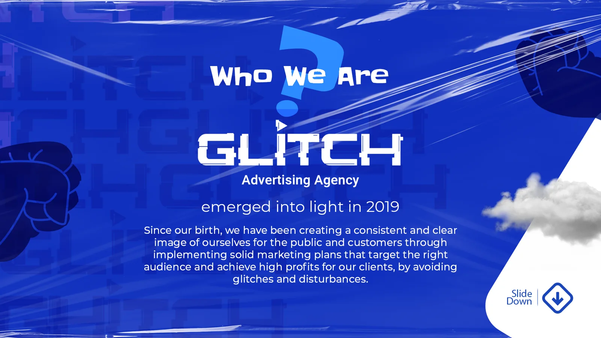
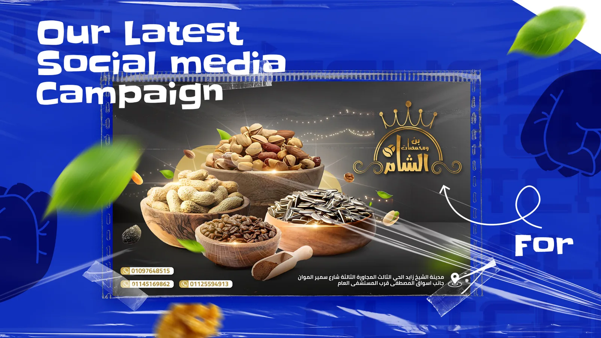
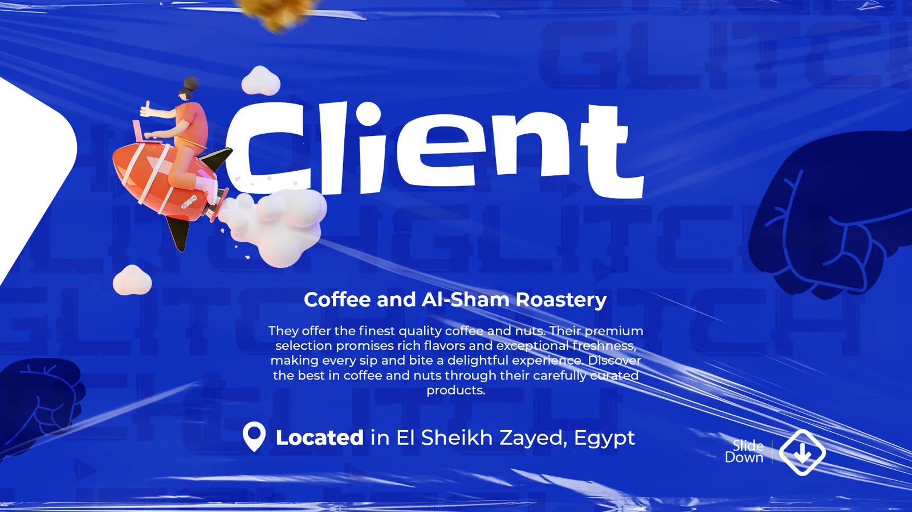
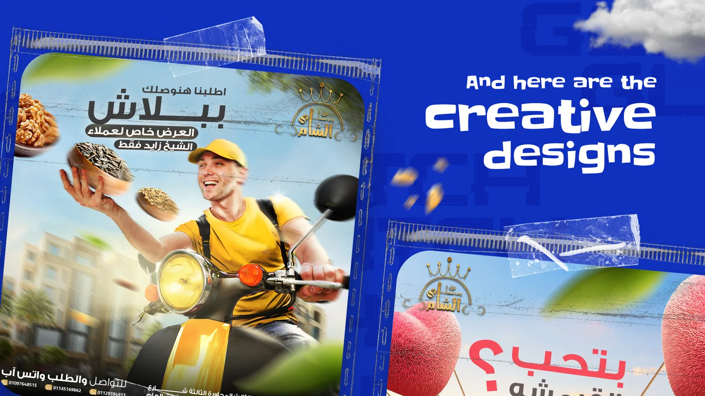
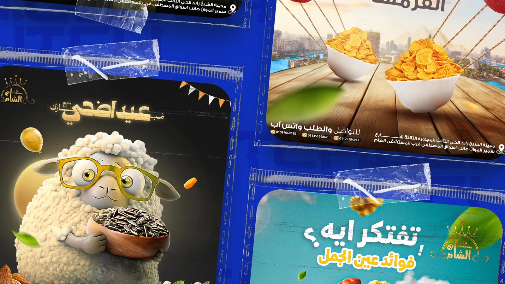
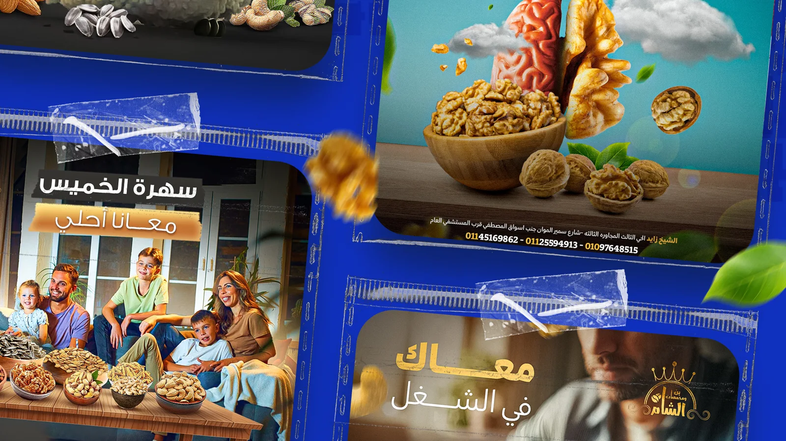
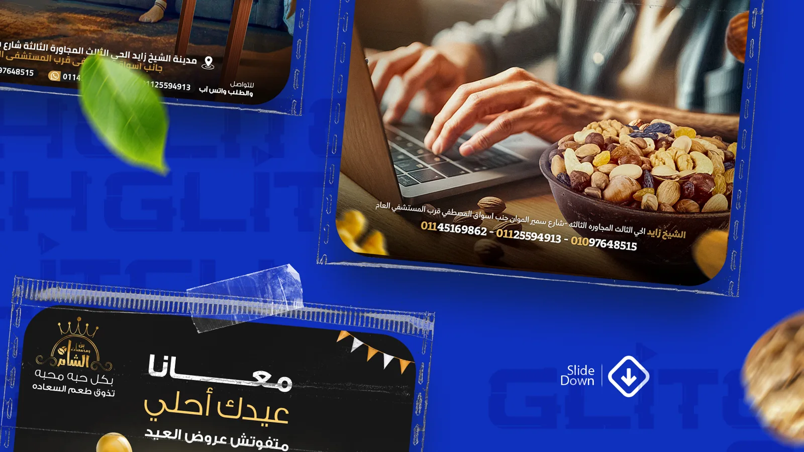
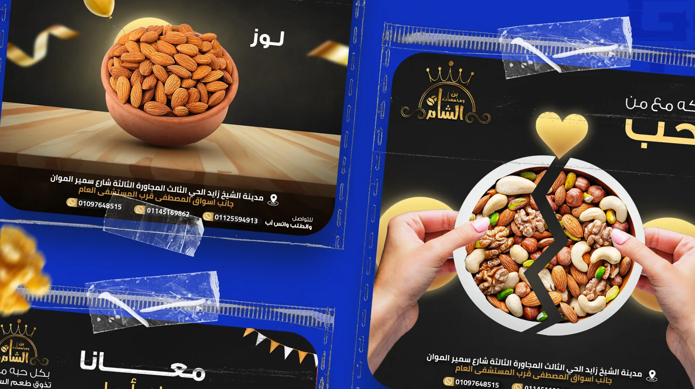
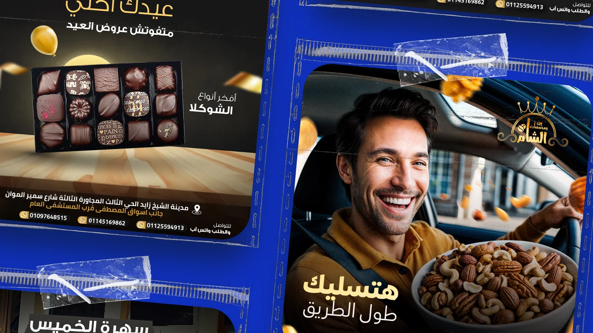
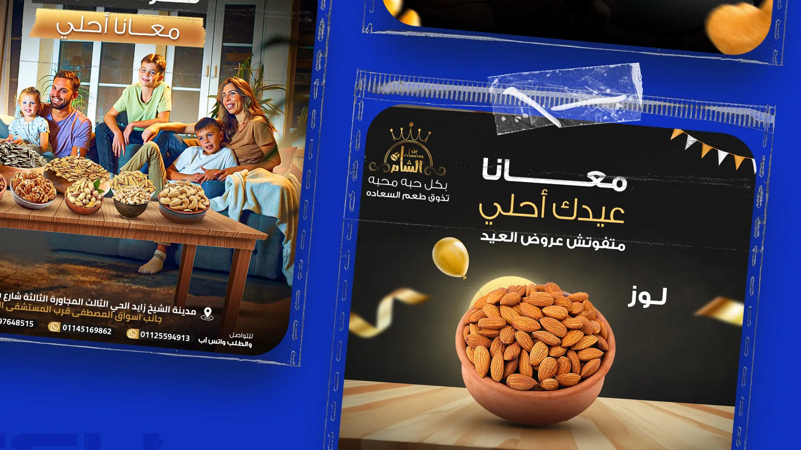